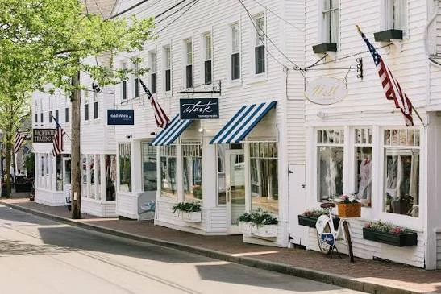
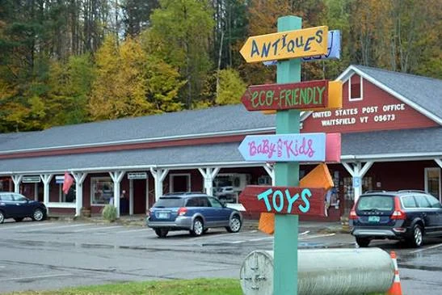

Make the highs carry the lows.
Rivertide grew from time spent working inside seasonal businesses and seeing how much local communities depend on them.
Its mission is to make future cash easier to understand, so owners can see how today’s decisions affect the quiet months.
Experience in retail, landscaping and restaurants shaped the idea: a few busy months need to carry much more than the next bill.
Open the demoSummer town or ski town, the math is the same.

